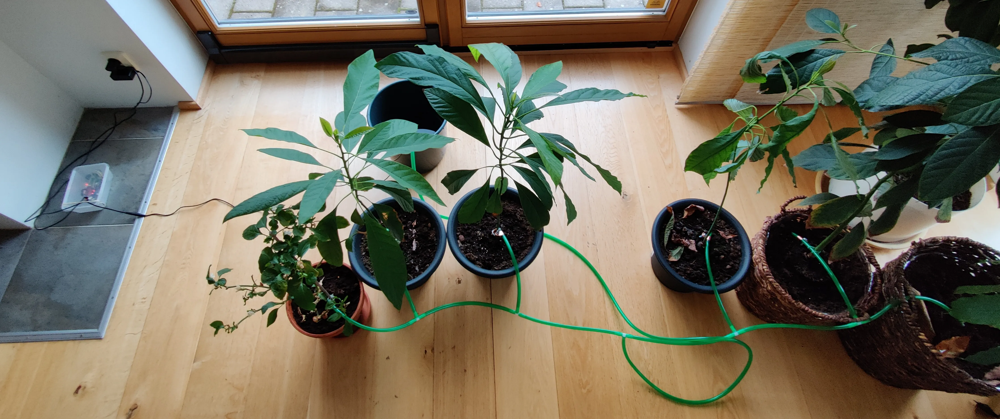

Automatic watering system
It's finally done! it only took a lot of spilled water, some headaches working with broken pins and a lot of surfing on local building depot websites. This watering system is built using a Raspberry Pi 3 A +, a partially broken LN298 ); an a 5W pump. The raspberry pi runs the pump every day at 19:00 with the help of a crontab script.
Shows a video where the spread of water is tested.
Github repoThe code for controlling the motorboard and pump, the crontab script and a product list.